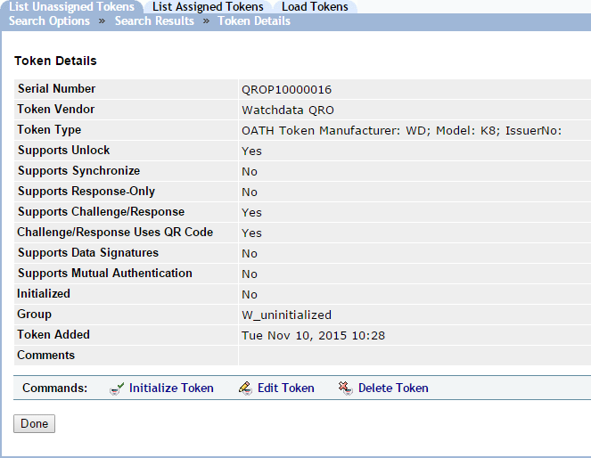
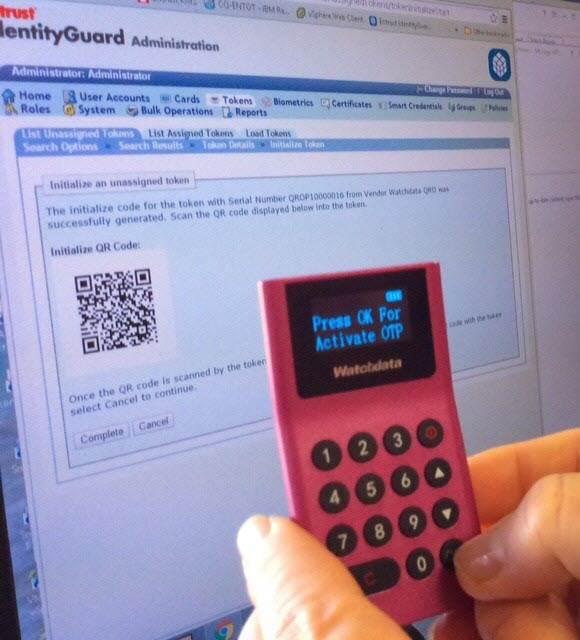
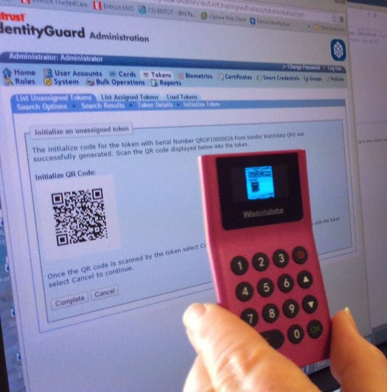
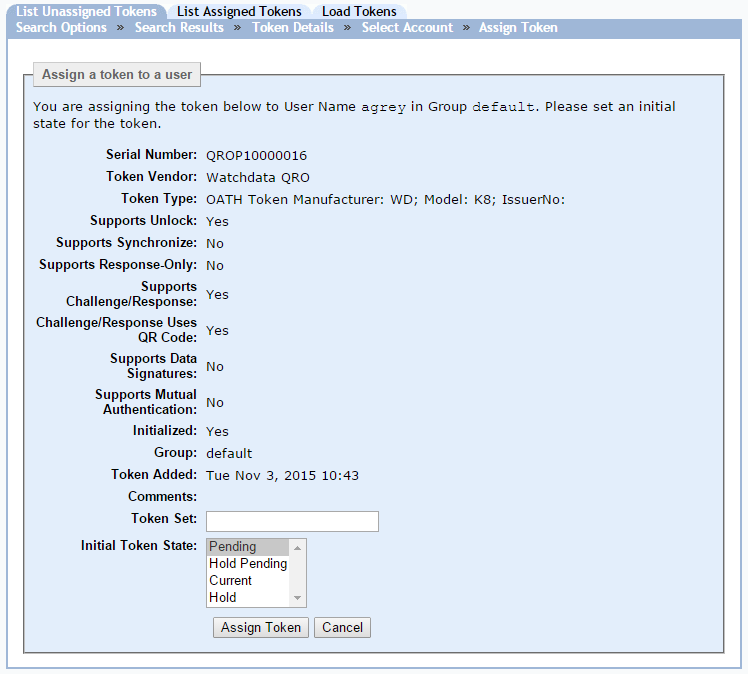
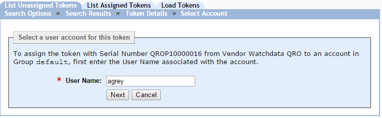

|
IdentityGuard Server 11.0 Administration Guide |
|
IdentityGuard Server 11.0 Administration Guide |
This procedure applies only to WatchdataQRO tokens.
WatchdataQRO tokens must be initialized and assigned to a specific user before they given to that user. This process could be performed through a help desk where an administrator and token user are both present.
This procedure describes that scenario.
To initialize and assign a WatchdataQRO token
1. Log in to the Entrust IdentityGuard Administration interface as the administrator.
 On the
Windows computer where Entrust IdentityGuard is installed
On the
Windows computer where Entrust IdentityGuard is installed
2. Click Tokens.
3. Click the List Unassigned Tokens tab.
4. Click the serial number of the token you want to initialize.
The Token Details page appears.

5. Click Initialize Token.
The Initialize an unassigned token page displays a QR code.
6. Turn
on the token. (Long press the On button  .)
.)
The token display prompts you to press OK to activate the token.

7. Point the camera on the back of the token at the QR code displayed in the Administration interface, and then press OK.

The token scans the QR code and activates the token, and then prompts you to enter a PIN for the token.
8. Use the token keypad to enter a PIN and then confirm the PIN when prompted.
9. In the Administration interface, click Complete.
10. On the Token Details page, click Assign Token.
11. On the Assign a token to a user page, click Assign Token.

12. On the Select a user account for this token page, enter the user name of the intended user, and then click Next.

13. On the Assign a token to a user page, click Assign Token.
Entrust IdentityGuard confirms that the token is assigned.

14. Click OK.
Give the token to the user. It is ready to use. If you have Self-Service Module configured for token self-administration, users can use the Self-Service Web site to perform token administration actions:
???DEPENDING ON SELF-SERVICE CONFIGURATION, MAY STILL FORCE ACTIVATION THROUGH SSM?